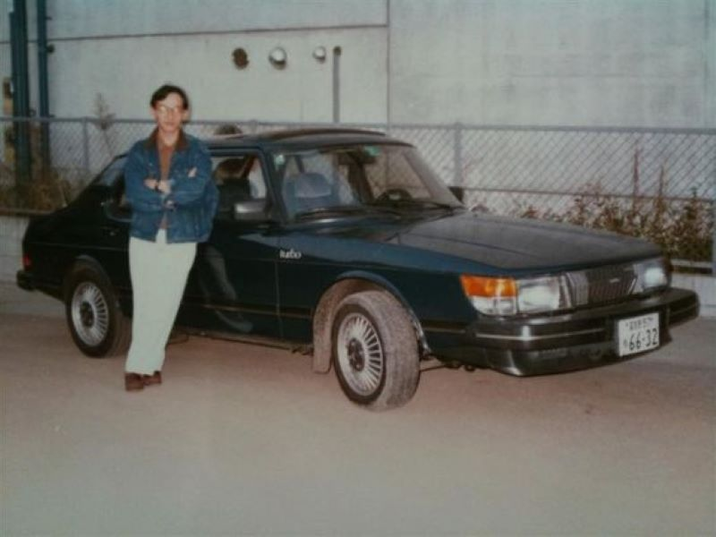

Um pouco da nossa história...
Kurokawa Atsutane, fundador da Concessionária AutoTurbo com seu primeiro carro em 1968
A Concessionária AutoTurbo foi fundada em 1973 por Kurokawa Atsutane que era filho de imigrante japoneses e apaixonado por carros, quando o drift surgiu e começou a se popularizar em 1970, Kurokawa teve muita dificuldade de comprar carros japoneses que eram referência para a modalidade, por isso ele fundou sua própria concessionária que trabalha exclusivamente com carros importados, sempre trazendo um ótimo atendimento e um serviço de qualidade.
Nossa concessionária fica localizada na Zona Oeste do Rio de janeiro, nos trabalhamos com carros importados, facilitando a aquisição de modelos japonenes sem a necessidade de uma importação e de serviços para mudar o volante de lugar, garantindo mais facilidade e menos burocracia para nossos clientes. Além disso nos temos uma imensa variedáde de carros, garantindo que nossos clientes tenham suas necessidades atendidas, visando sempre o melhor atendimento e a melhor qualidade nos nossos produtos.